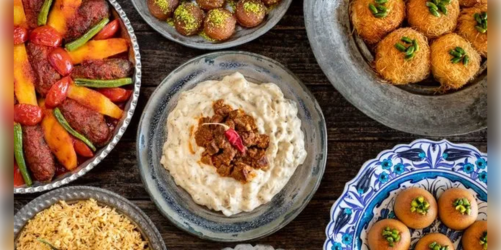
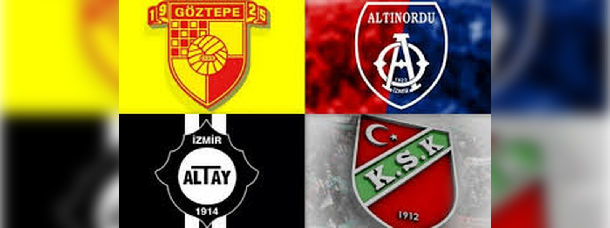

İzmir'in Tarihi Yerleri

Kadifekale, İzmir'in merkezinde yer alan ve şehrin panoramik manzarasını sunan bir tepedir...
İzmir Agora’sı, Roma dönemine tarihlenen bir açık hava pazar yeridir...
İzmir iline bağlı Selçuk ilçesinde yer alan Efes, antik dünyanın en önemli kentlerinden biridir...
Asansör, İzmir'in Karataş semtinde yer alan ve 1907 yılında inşa edilen tarihi bir yapıdır...
Kemeraltı, İzmir’in en eski ve en canlı çarşılarından biridir...
Yassıada, İzmir’in doğusunda yer alan bir adadır...
İzmir’in simgelerinden biri olan Tarihi Saat Kulesi, 1901 yılında inşa edilmiştir...
St. Polycarp Kilisesi, İzmir’in en eski Hristiyan kiliselerinden biridir...
İzmir Mutfağı

İzmir’in Yemek Kültürü: Bir Lezzet Yolculuğu
İzmir, Türkiye’nin batısında, Ege Bölgesi’nde yer alan ve tarihi, kültürel zenginlikleriyle dikkat çeken bir şehir olarak bilinir...
Kısır, Türkiye genelinde popüler bir salata türü olsa da İzmir’deki kısır, bölgesel malzemeler ve tatlarla zenginleştirilir...
Boyoz, İzmir’in simgelerinden biri olan bir hamur işidir...
İzmir mutfağının yöresel lezzetlerinden biri olan çömlek fasulyesi, adını pişirildiği çömlek kaplardan alır...
Sakızlı muhallebi, İzmir’in tatlı kültüründe özel bir yer tutar...
Kuzu tandır, İzmir mutfağında özel bir yeri olan ve özellikle özel günlerde yapılan bir yemektir...
İzmir köfte, Türk mutfağında köfte çeşitlerinden biri olarak...
İzmir Futbol Takımları

Kuruluş: 1925
Başarılar: 1 Süper Lig Şampiyonluğu, 1 Türkiye Kupası, 2 Türkiye Süper Kupa.
Kuruluş: 1912
Başarılar: 1 Türkiye Kupası, 1 Türkiye Süper Kupa.
Kuruluş: 1914
Başarılar: 1 Süper Lig Şampiyonluğu, 1 Türkiye Kupası.
Kuruluş: 1922
Başarılar: 2 2. Lig Şampiyonluğu.
p>